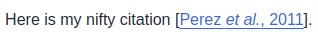

Headings, Styling and Bibliography#
Markdown cells support several special characters. Sometimes markdown doesn’t make line breaks when you want them. To force a linebreak, use the following code: <br>.
Markdown cells also support several headings sizes:
Heading 1#
Heading 2#
Heading 3#
Heading 4#
The heading fonts are applied by adding an increasing number of # at the beginning of the line.
Additionally, Use the following code to emphasize text:
Bold text: string or string
Italic text: string or string
If you wish to add a bibliography, first add a reference to the BibTex file references.bib, i.e:
@article{perez2011python
, title = {Python: an ecosystem for scientific computing}
, author = {Perez, Fernando and Granger, Brian E and Hunter, John D}
, journal = {Computing in Science \\& Engineering}
, volume = {13}
, number = {2}
, pages = {13--21}
, year = {2011}
, publisher = {AIP Publishing}
}
Next, in the topic you can use the following format to cite this reference:
Here is my nifty citation [PGH11].
Re-build your book, and it should look like this:

Finally, we’ll generate a bibliography for our citations. Links to this bibliography will be automatically created when you cite something.
We’ll use the {bibliography} directive to add one to our book. Add the following to your page:
Fernando Perez, Brian E Granger, and John D Hunter. Python: an ecosystem for scientific computing. Computing in Science \\& Engineering, 13(2):13–21, 2011.
This last directive will only be visible in the html version of your course. Now would be a great time to ./build.sh the course again and watch the bibliography.